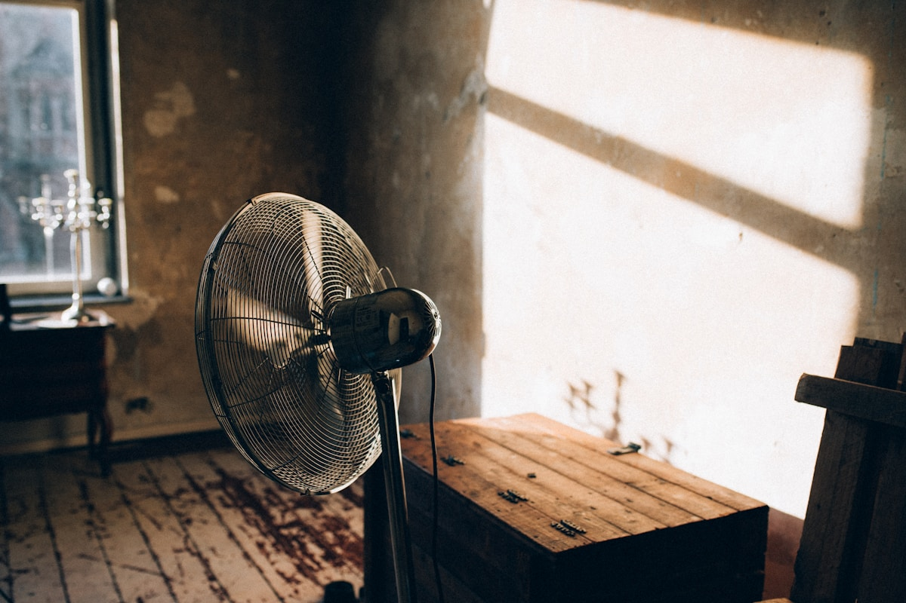

Before anything else in a restoration project can work, the water has to be extracted. Structural materials, floors, possessions and building systems all take less damage when standing water comes out sooner. Left standing, water keeps moving deeper by the hour, wicking into drywall, soaking carpet pad, seeping under flooring and saturating the framing. Cleveland Restoration Squad provides emergency water extraction throughout Cleveland using industrial-grade truck-mounted and portable equipment capable of removing hundreds of gallons per minute.
Our truck-mounted extraction units are among the most powerful water removal systems available, with the suction to pull water from carpets, hard floors and structural materials far more effectively than consumer or rental equipment. For areas truck-mounted hoses cannot reach, we deploy powerful portable extractors, submersible pumps and specialty tools designed for specific situations, including water trapped in wall cavities, between floor layers and in confined spaces.
There is more to a professional extraction than getting rid of the water in plain sight. Our IICRC-certified technicians use moisture detection equipment to identify water that has migrated into hidden areas: behind baseboards, inside wall cavities, under cabinets and beneath flooring materials. Before drying starts, we use specialty tools to pull as much moisture as we can out of those hidden spots, so structural drying takes far less time and equipment and secondary mold is less likely.

Water Extraction: What Homeowners Ask
Ready to Solve Your Water Extraction Problem?
Our IICRC-certified technicians are standing by to help.
Call (913) 210-6506 NowHow to Prevent Water Extraction Problems
A little prevention goes a long way in avoiding expensive restoration emergencies. Follow these tips from our IICRC-certified technicians:
- Leak-sensing shutoff valves can cut off the water on their own when something fails
- Early leak signs show up near appliances, toilets and sink cabinets, so check those spots on a schedule
- Maintain appliance supply lines and replace hoses that show wear or age
- Know where your main water shutoff valve is and label it clearly
- Critical areas of the house should each have a leak sensor that you know is working
- Store a bucket and spare towels where you can grab them, along with the number for a restoration company
DIY vs. Professional Water Extraction
While some minor restoration tasks can be handled by handy homeowners, most water damage work requires professional expertise, specialized equipment, and proper safety training. Consider the following comparison:
| Factor | DIY Approach | Professional Service |
|---|---|---|
| Follow-Through | Extraction alone doesn't prevent mold | Drying equipment goes in right after extraction |
| Equipment Cost | Rental fees add up quickly | Our equipment is part of the service |
| Removal Rate | Shop vac: 1 to 2 gallons per minute | Hundreds of gallons every minute by truck-mount |
| Speed | A moderate amount takes hours to clear | Equal volume cleared within minutes |
| Limiting Damage | Slow removal means more damage | Quick extraction keeps damage down |
The Benefits of Professional Water Extraction
Both the harm done to your home and the restoration bill depend directly on quick, thorough extraction. Professional truck-mounted extraction equipment removes water hundreds of times faster than consumer tools, so what might take you an entire day with a shop vacuum takes our equipment minutes. This speed difference is not just about convenience, it is about preventing thousands of dollars in additional damage that occurs with every hour water stays in contact with building materials.
Hidden moisture, the kind consumer tools never reach, is part of a professional extraction too. It follows plumbing lines and electrical conduits, slips between flooring layers, climbs drywall by wicking and is drawn into carpet pad through capillary action. Surface extraction by itself leaves much of this behind, so our team uses specialty techniques and tools aimed at the hidden moisture. The payoff is a shorter drying period, lower equipment cost and, most important of all, less risk of mold growing unseen in trapped moisture.
Not Sure What You Need?
Our experienced technicians can assess your situation and recommend the best solution.
Call (913) 210-6506 TodayHow Our Water Extraction Works
We follow a proven process to ensure every job is completed to the highest standards. Here's how we handle water extraction from start to finish:
Rapid Response
The crew gets to you fast, with portable and truck-mounted extractors ready to go to work at once. Once the conditions are sized up, the pumps and extractors are running soon after we arrive.
Removing the Standing Water
Truck-mounted extractors remove large volumes of standing water from floors, carpets and surfaces. Submersible pumps handle deep water in basements and crawl spaces.
Deep Extraction from Materials
With specialty tools we draw moisture out of upholstery, carpet and pad, wall cavities and other spots that are hard to reach. The more moisture we extract mechanically, the faster your property dries.
Moving On to Drying
After extraction has done all it can, structural drying begins with commercial-grade dehumidifiers and air movers placed around the area. Moisture readings establish baselines for monitoring drying progress.
When to Call for Water Extraction in Cleveland
Catching these issues early helps you avoid costly problems and protect your property. Watch for these telltale signs that professional help is needed:
- Water squeezing up between floorboards, planks or tiles when you walk
- Ceilings, light fixtures or walls that are actively leaking water
- Water accumulating after a fire suppression system discharges
- Active leaks from plumbing, appliances or HVAC systems
- Standing water on any floor surface, whatever the source
- Pooled water on the carpet, or a soggy feel with every step
- Water visible in crawl spaces, mechanical rooms or utility areas
Don't Wait Until It's an Emergency
Many water damage problems start small but can escalate quickly into costly emergencies. Call Cleveland Restoration Squad at (913) 210-6506 at the first sign of trouble.
Talk to a Water Extraction Expert
The sooner you call, the sooner we can help. Reach Cleveland Restoration Squad for same-day service.
Get Help: (913) 210-6506